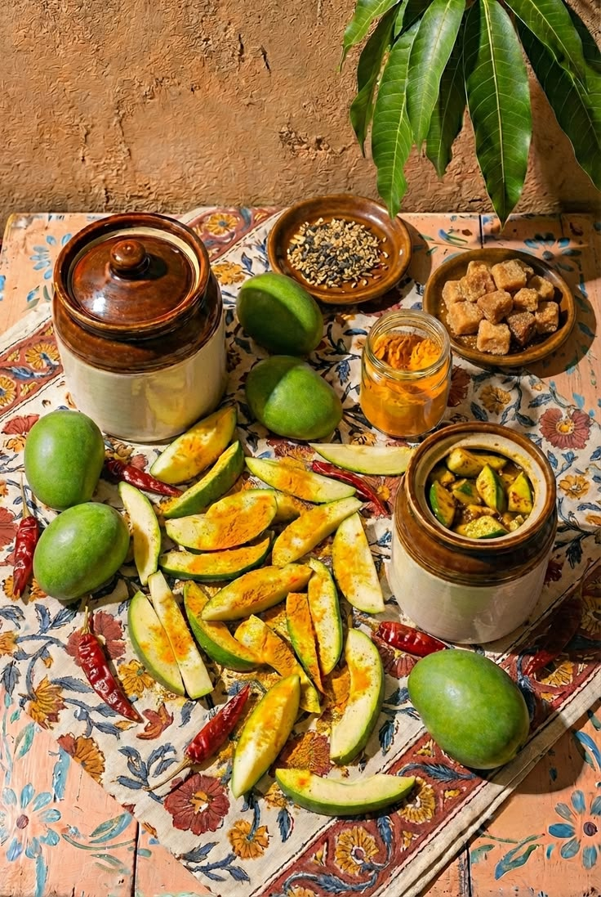

Mango Pickle
Ingredients
- 2 cups raw green mangoes, cut into small pieces
- 3 tbsp mustard seeds
- 2 tbsp fennel seeds
- 1 tbsp fenugreek seeds
- 2 tbsp red chilli powder
- 1 tsp turmeric powder
- 1 tbsp salt
- 1/2 tsp asafoetida (hing)
- 1 cup mustard oil
Instructions
- Wash the raw mangoes thoroughly and dry them completely. Cut them into small pieces and remove the seeds.
- Spread the mango pieces on a clean cloth and allow them to dry for a few hours. Make sure there is no moisture left on the mangoes.
- Lightly roast the mustard seeds, fennel seeds, and fenugreek seeds separately. Allow them to cool and coarsely grind them.
- In a large bowl, combine the ground spices with red chilli powder, turmeric powder, salt, and asafoetida.
- Add the mango pieces to the spice mixture and toss well until every piece is evenly coated.
- Heat the mustard oil until it is hot. Turn off the heat and allow the oil to cool completely.
- Pour the cooled mustard oil over the mango and spice mixture. Mix everything thoroughly using a clean, dry spoon.
- Transfer the pickle into a clean, completely dry glass jar. Make sure the mango pieces are well covered with oil.
- Keep the jar in a warm place for several days and stir the pickle occasionally with a clean, dry spoon to help the flavors develop.
- Once the mangoes become tender and the spices have blended well, the pickle is ready to enjoy.
- Serve with roti, paratha, dal-rice, or any of your favorite Indian meals.
